Research学术研究
Research Projects研究项目
01
re•flect
Lead Researcher主要研究员 · 2024–2027
re•flect is developing an interactive decision-support tool (IfScape) that visualises how daylight can be strategically used in river restoration. The tool allows stakeholders to explore “what if” scenarios, co-design restoration strategies, and reflect on different possibilities and trade-offs.
The project focuses on two contrasting settings: rural Scotland, where rivers have lost much of their riparian woodland and are exposed to excessive sunlight, and urban Zurich, where 33% of waterways are hidden in underground culverts. Built using video game engine technology, IfScape brings together environmental data, ecological models, and planning regulations in an interactive 3D environment. Users can test different land-use and restoration scenarios in real time and better understand their potential impacts and trade-offs.
I lead the day-to-day research work, including research design, literature reviews, spatial analysis, and socio-political research in Scotland and Zurich. I also develop IfScape, organise stakeholder workshops, write academic papers, present research findings to wider audiences, co-supervise theses, and design and manage the project website.
re•flect 正在开发一款交互式决策支持工具（IfScape），将日光在河流修复中的策略性应用可视化。借助这一工具，相关各方可以探索“如果……会怎样”的情景，共同设计修复策略，并思考不同的可能性与权衡。
项目聚焦两种截然不同的环境：苏格兰乡村的河流失去了大部分河岸林地，受到过度日照；苏黎世城市中，33% 的水道被埋于地下暗渠。IfScape 基于电子游戏引擎技术，在交互式三维环境中整合环境数据、生态模型和规划法规。用户可以实时测试不同的土地利用和修复情景，更好地理解其潜在影响与权衡。
我主导项目的日常研究工作，包括研究设计、文献综述，以及在苏格兰和苏黎世开展的空间分析与社会政治研究。我还负责开发 IfScape、组织利益相关方工作坊、撰写学术论文、向更广泛的受众展示研究成果、共同指导学生论文，并设计和管理项目网站。
Peer-Reviewed Publications同行评审论文

Research Highlights 研究亮点
- We examine how artificial intelligence (AI) supports integrated urban ecosystem restoration (UER) approaches by linking monitoring, simulation, and participatory processes within a social–ecological–technological systems framework, forming an AI-integrated UER feedback cycle.
- AI can contribute to social-ecological monitoring, multisource data integration, landscape simulation, citizen understanding, co-design, and adaptive management in UER under expert oversight and with attention to associated risks.
- 本文基于社会、生态与技术系统框架，探讨人工智能如何通过衔接监测、模拟与公众参与过程，支持城市生态系统修复的综合方法，并形成一个融合人工智能的城市生态系统修复反馈循环
- 在专家监督并充分关注相关风险的前提下，人工智能可应用于社会生态监测、多源数据整合、景观模拟、公众认知、协同设计以及城市生态系统修复的适应性管理。

Research Highlights 研究亮点
- This technical note provides practical guidance on using artificial intelligence (AI) to support participatory ecosystem restoration, i.e., restoration processes that actively and meaningfully engage local communities and relevant stakeholders, through: (1) AI-empowered inclusive ecosystem monitoring, (2) AI-supported collaborative planning and design, (3) AIfacilitated ecological knowledge communication, and (4) AI-enabled facilitation and reporting of community dialogues. Together, these application areas support key components of ecosystem restoration, namely assessment, planning and design, implementation, ongoing management, and monitoring and evaluation. Under expert oversight and with careful management of associated risks, AI can enhance local participation, bridge knowledge systems, and strengthen the ecological and social resilience of long-term restoration initiatives
- 这份技术说明提供了关于如何利用人工智能（AI）来支持参与式生态系统修复的实用指导。参与式生态系统修复是通过积极而有意义地让当地社区和相关利益相关者参与生态系统修复过程，具体包括：（1）AI赋能包容性生态监测，（2）AI支持协作规划与设计，（3）AI促进生态知识交流，（4）AI实现社区对话引导和报告。这些应用领域共同支持生态系统恢复的关键环节，即评估、规划与设计、实施、持续管理以及监测与评估。在专家监督下，并谨慎管理相关风险，AI能够增强地方参与、弥合知识体系差距，并提升长期恢复项目的生态和社会韧性


Research Highlights 研究亮点
- Participatory mapping and choice experiments reveal perceived ES interactions.
- Visitors prioritize aesthetics over biodiversity and recreation.
- Aesthetics show spatial synergies with biodiversity and recreation.
- Enhancing biodiversity–aesthetics synergies sustain welfare without added recreation.
- 参与式制图和选择实验揭示了感知的生态系统服务相互作用。
- 游客对美学的重视程度高于生物多样性和游憩。
- 美学与生物多样性和游憩表现出空间协同作用。
- 增强生物多样性与美学的协同作用可在不增加游憩的情况下维持福利。


Research Highlights 研究亮点
- Clear mismatches exist between perceived and monitored bird biodiversity across spatial areas.
- Bird-rich zones were sometimes overlooked, while similar areas were perceived as unevenly biodiversity-supportive.
- Perceived richness reflects short-term observations but fails to capture long-term biodiversity patterns.
- Biodiversity perception is shaped by perceptual salience, including species visibility, spatial cues, and momentary experience.
- Perceptions align with monitored data mainly for easily visible species, excluding unseen ones.
- Spatial cues can enhance local perception but fail to represent overall ecological richness.
- 感知与监测的鸟类生物多样性在空间上存在明显不一致。
- 部分高鸟类丰富度区域被忽视，而相似区域的感知差异显著。
- 感知丰富度反映短期观测结果，但无法捕捉长期多样性格局。
- 生物多样性感知受知觉显著性影响，包括物种可见性、空间线索和瞬时体验。
- 感知主要与易观察物种的监测结果一致，未被观察到的物种常被忽略。
- 空间线索可增强局部感知，但难以反映整体生态丰富性。

Research Highlights 研究亮点
- A quantitative review of 103 studies examines linear spaces for physical activity.
- 15 environmental factors are assessed across jogging, walking, and cycling.
- Environmental influences are compared at both macro and micro spatial scales.
- 7 general and 8 activity specific synergistic factors are identified.
- 5 spatial design models support healthier and more active urban environments.
- 基于103篇文献的定量综述，研究城市线性空间中的健身活动。
- 评估15项环境因素对慢跑、步行和骑行的影响。
- 从宏观和微观两个空间尺度比较不同环境因素的作用。
- 识别出7项普遍协同因素和8项活动差异化协同因素。
- 提出5种空间设计模式，为建设健康活力的城市环境提供支持。

Research Highlights 研究亮点
- A development framework for an ecology-integrated gaming tool for collaborative landscape design is presented.
- The tool architecture integrates ecological data, models, planning rules, and 3D visualization.
- Procedural Content Generation (PCG) enables automated generation of ecological landscape elements.
- A graphical user interface (GUI) supports interactive exploration and combination of landscape strategies.
- 提出了一套面向协作式景观设计的生态融合型游戏工具开发框架。
- 该工具的架构整合了生态数据、生态模型、规划规则与三维可视化技术。
- 程序化内容生成（Procedural Content Generation，PCG）技术实现了生态景观要素的自动化生成。
- 图形用户界面（Graphical User Interface，GUI）支持用户交互式地探索与组合不同的景观规划策略。

Research Highlights 研究亮点
- A nationwide survey assessed perceived health benefits of wetland parks during COVID-19.
- Perceived mental health benefits were greater than physical health benefits.
- Perceived health benefits were slightly higher after the pandemic peak than before COVID-19.
- Wildlife habitat services were perceived as the most important contributor to health benefits.
- Health experts perceived lower health benefits from wetland parks than other respondents.
- 通过全国性问卷调查，评估了新冠疫情期间公众对湿地公园健康效益的感知。
- 公众感知到的湿地公园心理健康效益高于身体健康效益。
- 与疫情前相比，公众对疫情高峰期过后湿地公园健康效益的感知略有提升。
- 野生动物栖息地服务被认为是促进健康效益感知的最重要生态系统服务。
- 与其他受访群体相比，健康领域专家对湿地公园健康效益的评价较低。

Research Highlights 研究亮点
- Social media data reveal public perceptions of wetland park ecosystem services.
- Recreation, aesthetics, and habitat are the most widely perceived services.
- Recreation and aesthetic perceptions are strongly interconnected.
- Flowering plants and colourful foliage shape perceptions of aesthetic value.
- Birds are central to public perceptions of habitat services.
- 社交媒体数据揭示了公众对湿地公园生态系统服务的认知。
- 休闲游憩、景观审美和生境保护是公众感知最强的三类服务。
- 公众对休闲游憩和景观审美的感知密切相关。
- 开花植物和彩叶树种是影响景观审美感知的重要因素。
- 鸟类是公众感知湿地公园生境服务的关键。

Design Portfolio设计作品集
Urban Landscape Practice Projects · Built Works城市景观实践项目 · 建成项目
Landscape Architecture & Urban Design风景园林与城市设计
Yunnan Agricultural Vocational College (Jiaoling Campus) · Yunnan, China云南农业职业学院（茭菱校区） · 中国云南
Role: Core Designer角色：核心设计人员
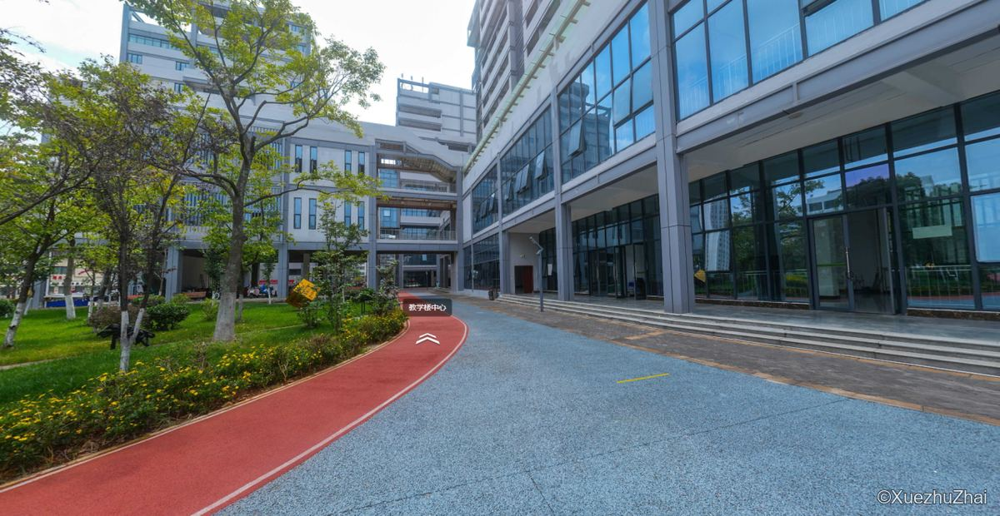
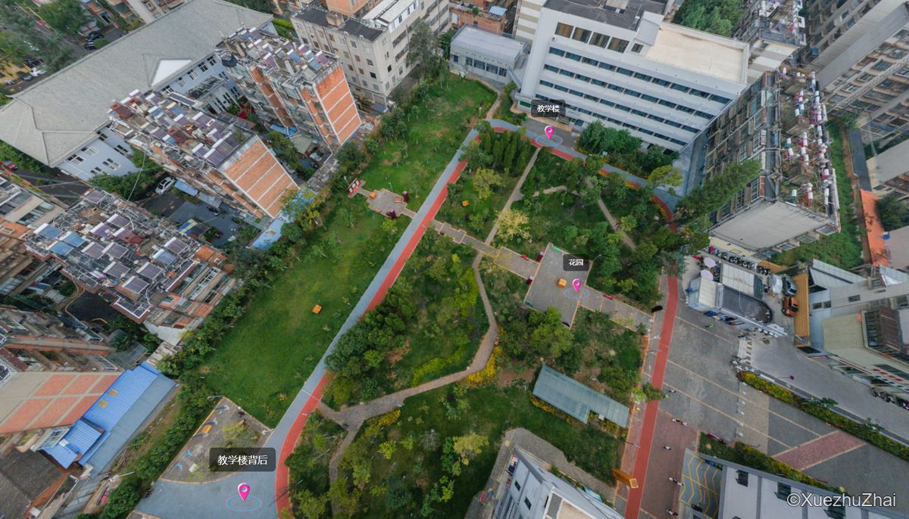
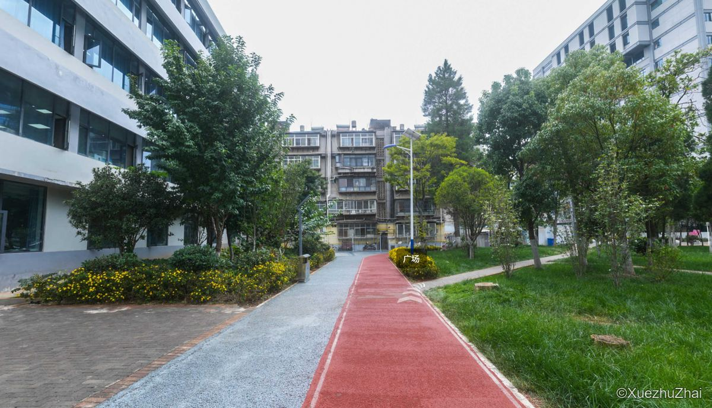
Landscape Architecture & Urban Design风景园林与城市设计
Landscape Renovation of Moonlight City Town, Shangri-La · Yunnan, China香格里拉月光城小镇景观提升改造 · 中国云南
Role: Core Designer角色：核心设计人员
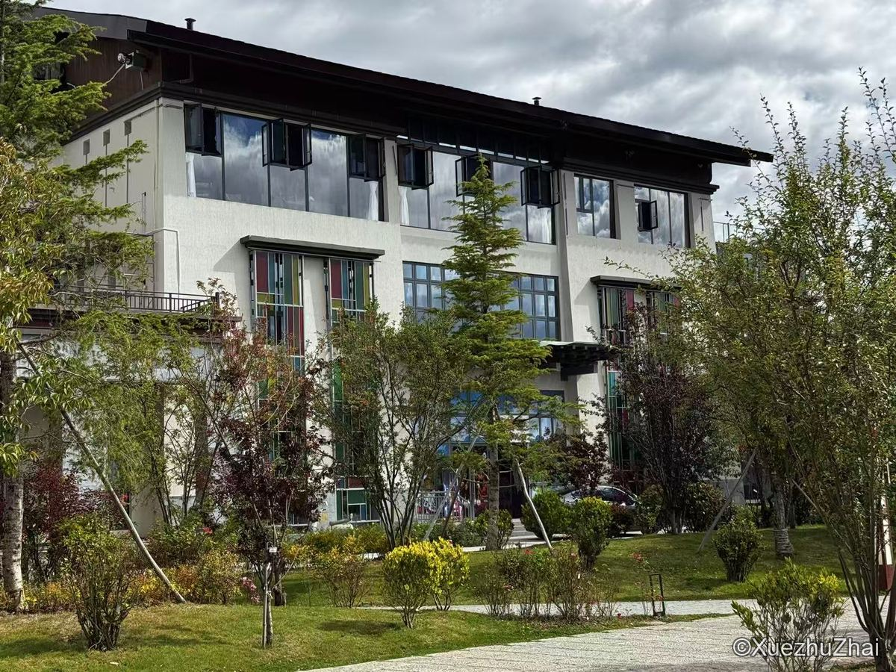
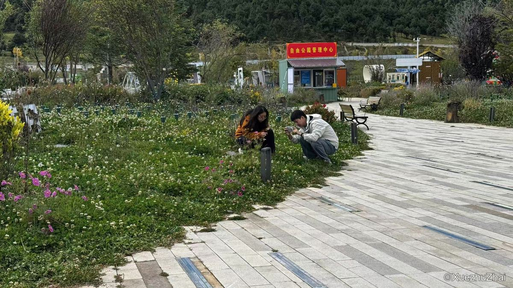
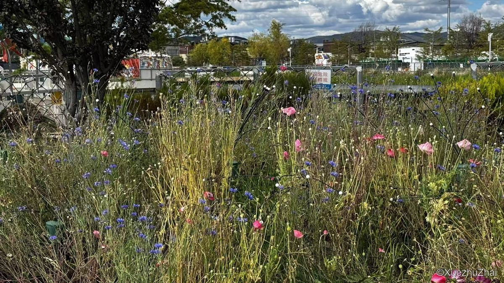
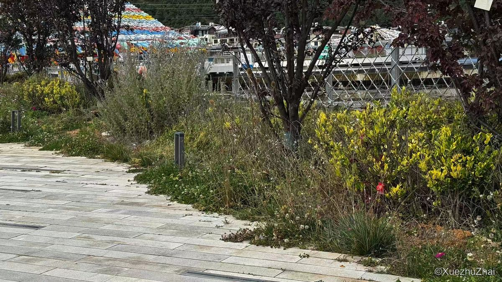
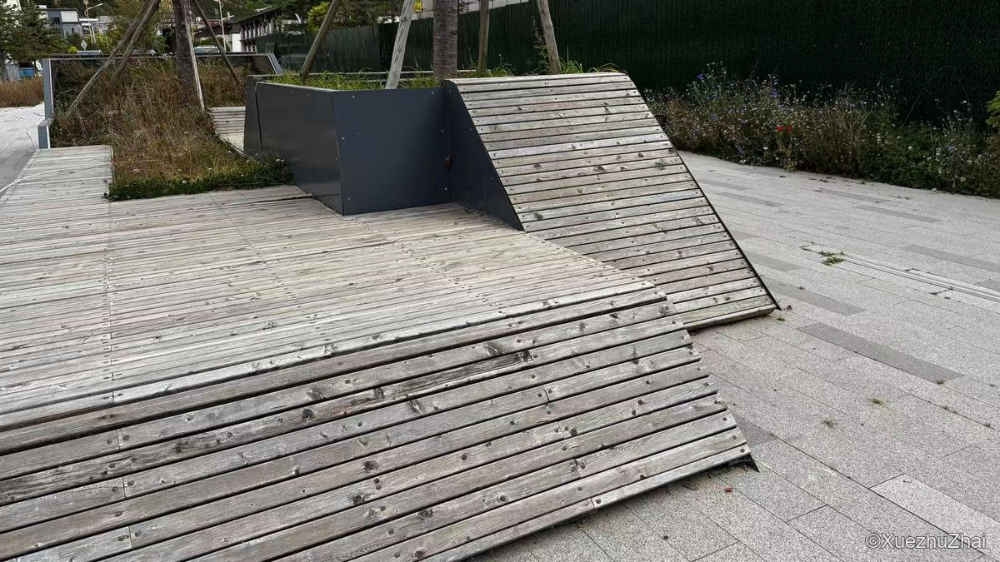
Photography摄影
Nature Through My Lens我镜头下的山水自然
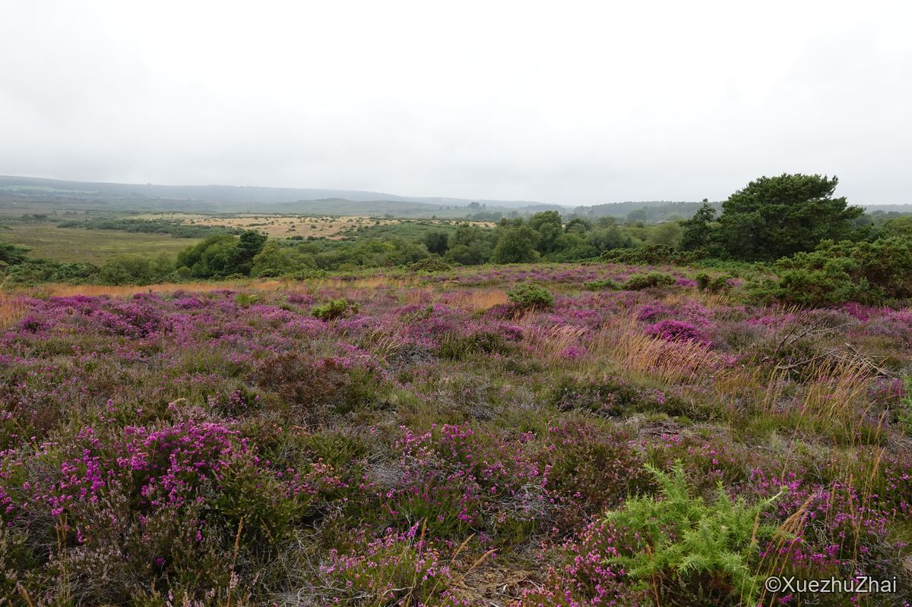
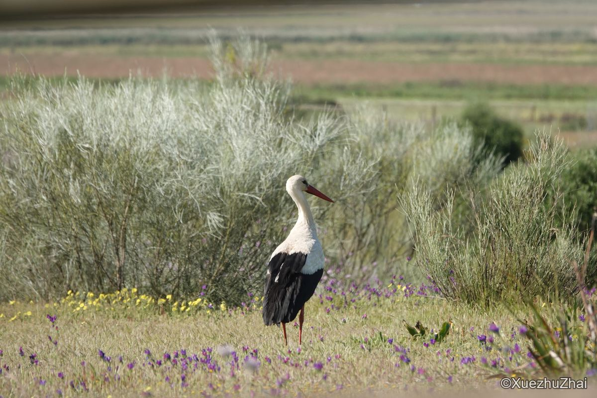
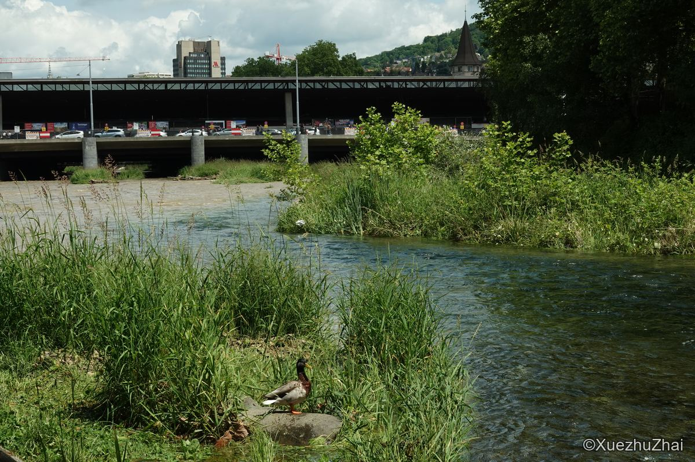
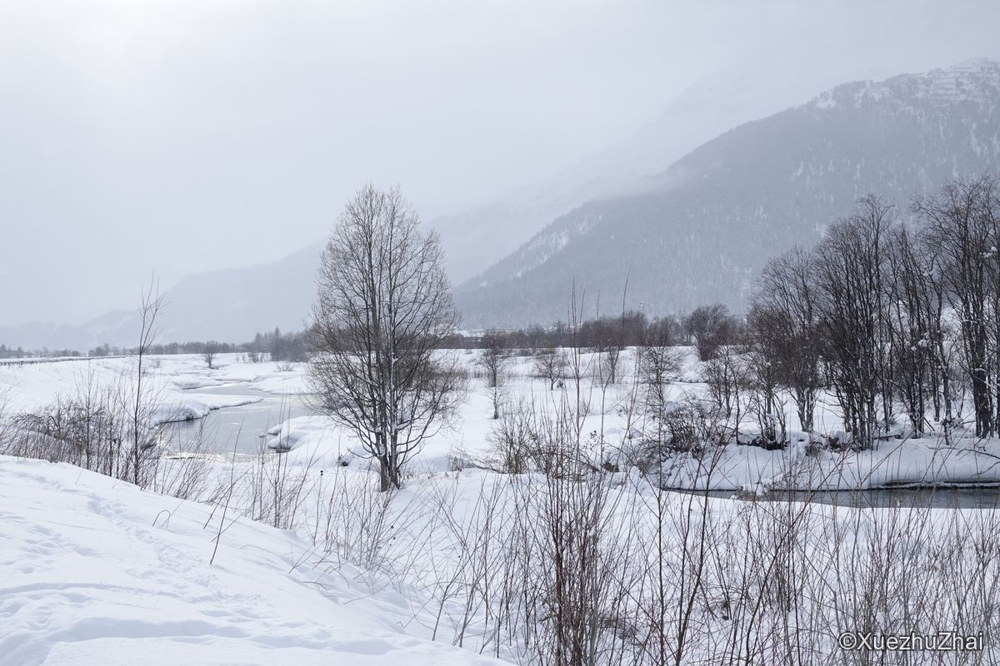
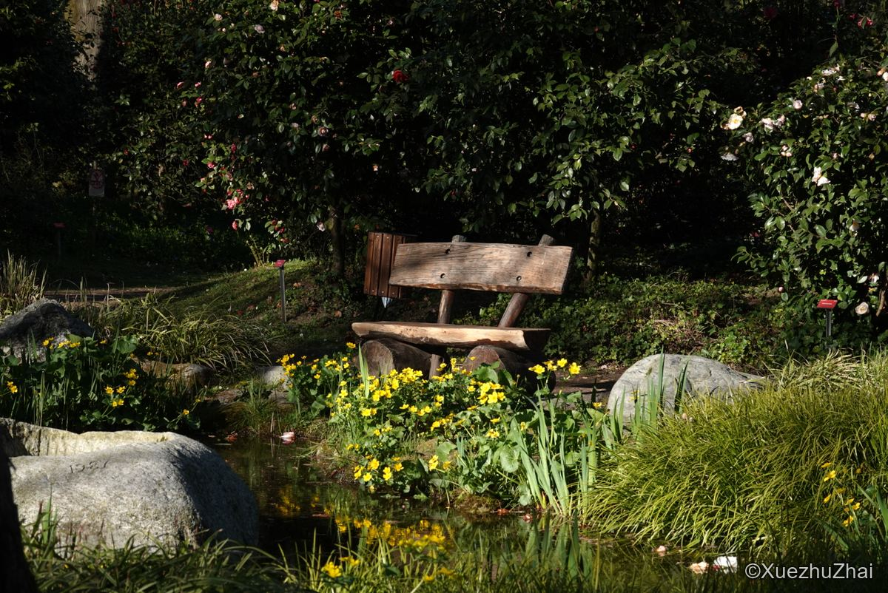